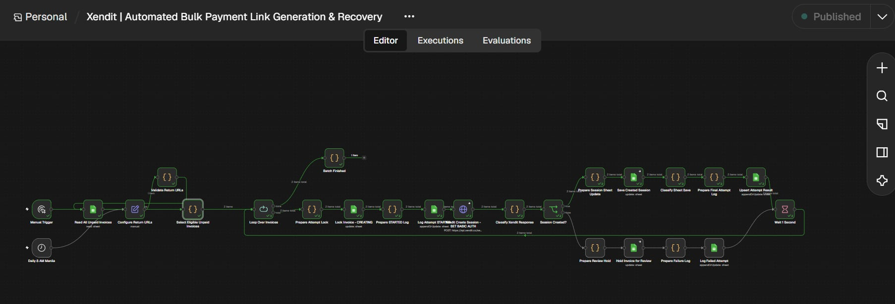

Reliable payment session orchestration.
Xendit — Automated Bulk Payment Link Generation & Recovery
Conceptual architecture
Simplified public-facing view; not a complete deployment or security diagram.

Business problem
Manually creating payment links for unpaid invoices is repetitive and makes failures difficult to reconcile.
My contribution
Workflow design, invoice validation, API integration, response classification and attempt logging.
Engineering decisions
Use eligibility checks and attempt-state records before API calls; route ambiguous or failed outcomes to review instead of blindly retrying.
Technical challenges
Duplicate invoices, uncertain API responses, partial spreadsheet writes and safe recovery.
Business value
Supports repeatable payment-link creation and traceable exception handling.
Implementation status & limitations
Workflow demonstrated; concurrent execution safety, recovery tests and live payment reconciliation are not established by the screenshot.
Measurement plan
Test duplicate inputs, API timeouts, partial writes and reruns; measure successful sessions per batch.